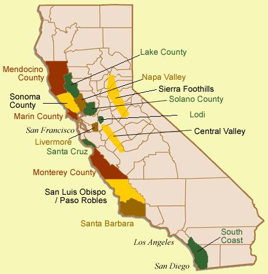

Italy
Italy is one of the most famous wine destinations. They have countless vineyards growing all types of grapes to make the different wines. You can see some here on the map. They are most famous for Chainti, but they also grow grapes to make Moscato, Prosecco, Pinot Grigio, Chardonnay and much more. |
|
France
France is another popular wine destination. Here is where the famous Bordeaux grapes are grown. France also grows Burgundy, Cognac,Cabernet Sauvignon, Cabernet Franc, and Champagne. The Champagne region is right near Paris, perfect for celebration or a romantic night out. |
|
Germany
Germany produces a lot of famous wines even if people have trouble saying most of them. One of there big wines is Liebfraumilch from the Rheinhessen region. In Pfalz Müller-Thurgau, Riesling, Silvaner, and Kerner are produced. |
|
California
California is one of the biggest wine producers in the United States. Napa Valley is the most popular region. Here they grow blends of France's famous Cabernet Sauvignon, Cabernet Franc, Merlot and others.
|
 |
Virginia
Virginia is becoming a popular wine producer. Vineyards in Virginia tend to produce Cabernet Sauvignon, Chardonnay, Merlot, Pinot Grigio, Viognier, and Rieslings. OPINION: Stone Tower in Leesburg VA, is the most beautiful vineyard if you ever find yourself in that area.
|
|